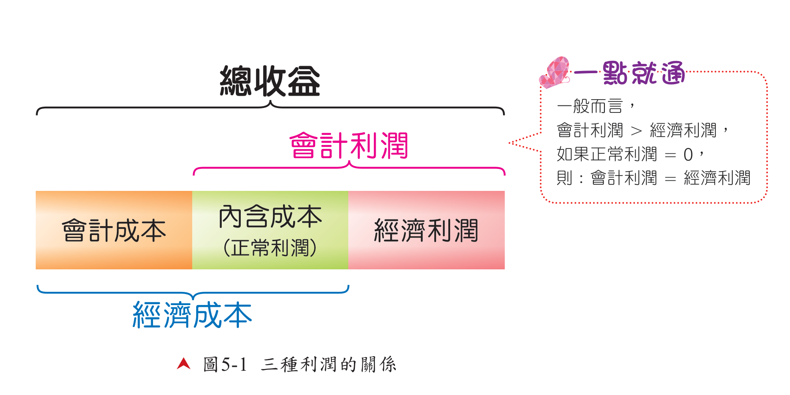
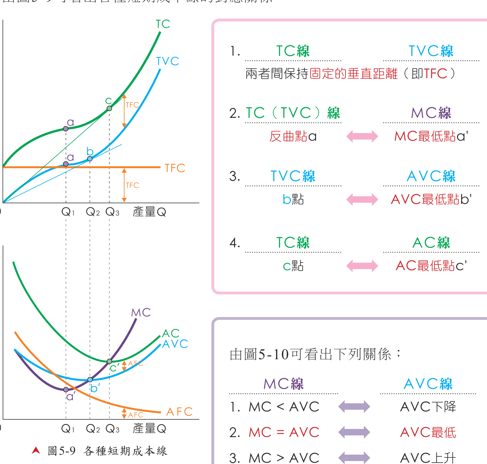
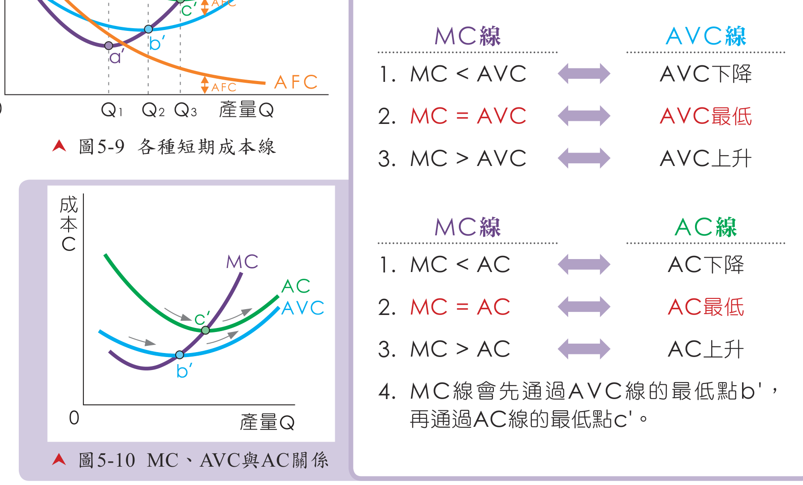
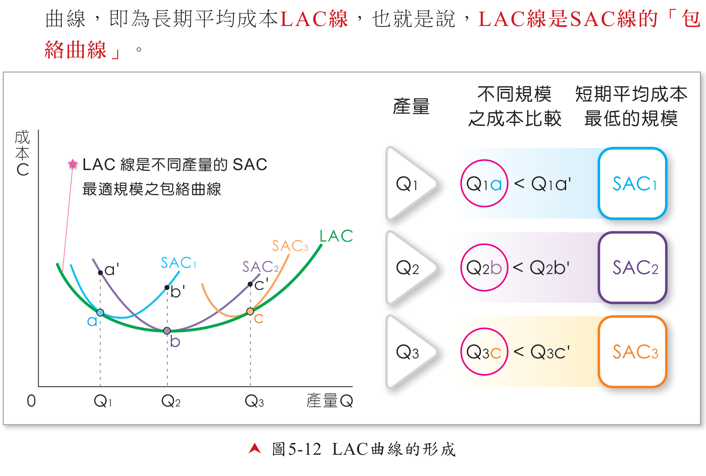
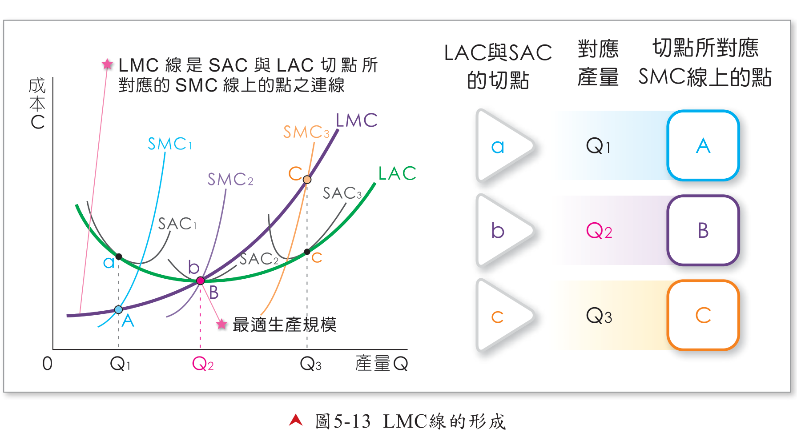
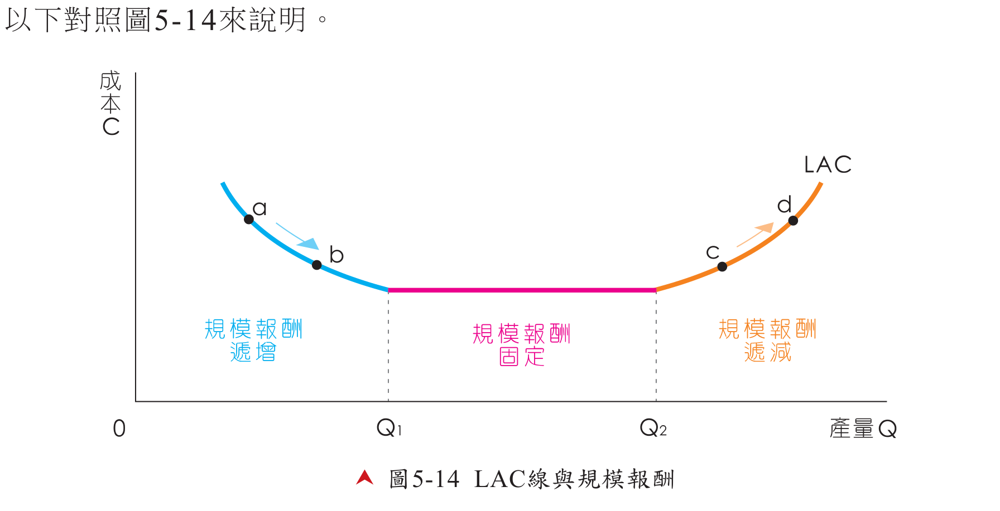
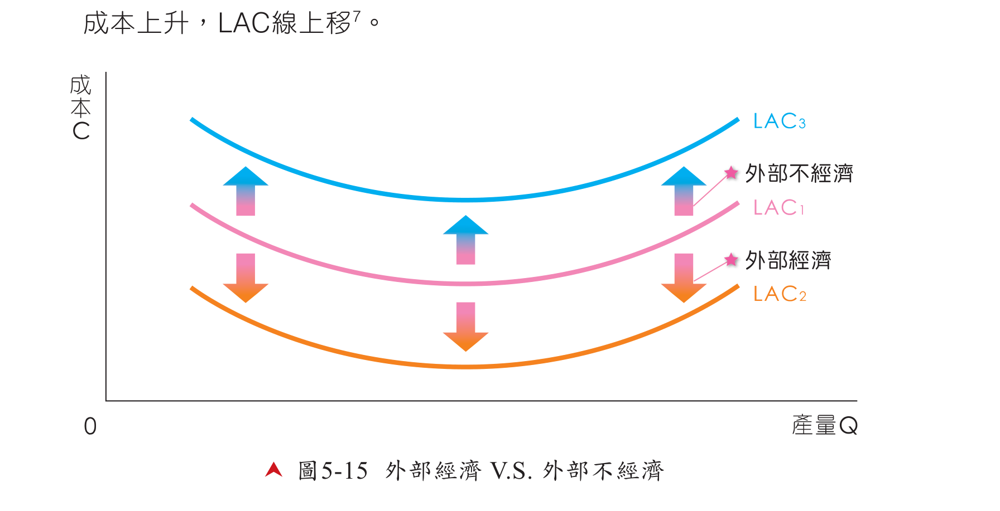

| 利潤名稱 | 計算公式 | 經濟意涵 |
|---|---|---|
| 會計利潤 | 總收益 (TR) － 會計成本 | 帳面上賺到的錢。 |
| 正常利潤 | 等於內含成本（隱含成本） | 企業家留在該產業所要求的最低報酬門檻。 |
| 經濟利潤 (π) （超額利潤） |
總收益 (TR) － 經濟成本 ＝ 會計利潤 － 正常利潤 |
超出所有機會成本後的真實淨利益。 |

短期內由於存在固定要素（廠房設備固定），故短期成本嚴格劃分為「固定成本」與「變動成本」：
| 成本指標 | 英文縮寫 | 計算公式 | 停工時（Q ＝ 0）狀態與曲線形狀 |
|---|---|---|---|
| 總固定成本 | TFC (Fixed) | TFC ＝ TC － TVC ＝ AFC × Q | Q ＝ 0 時仍存在（TFC ＞ 0）。水平直線，不隨產量 Q 增減而改變（廠房折舊、地租貸款利息）。 |
| 總變動成本 | TVC (Variable) | TVC ＝ TC － TFC ＝ AVC × Q | Q ＝ 0 時 TVC ＝ 0。從原點出發，隨 Q 增加而先凹向下後凹向上（逆S形）。 |
| 總成本 | TC (Total) | TC ＝ TFC ＋ TVC ＝ AC × Q | Q ＝ 0 時 TC ＝ TFC。縱軸截距為 TFC，形狀與 TVC 完全平行，垂直距離恆為 TFC！ |
| 平均固定成本 | AFC | AFC ＝ TFC / Q | 等軸雙曲線。隨產量 Q 增加而持續遞減，無限接近兩軸但絕不相交！ |
| 平均變動成本 | AVC | AVC ＝ TVC / Q | U 字形。隨產量增加先遞減後遞增（受邊際報酬遞減法則影響）。 |
| 平均成本 | AC (Average) | AC ＝ TC / Q ＝ AFC ＋ AVC | U 字形。隨 Q 增加，AC 與 AVC 的垂直距離（AFC）愈來愈小，兩線無限接近但永不相交！ |
| 邊際成本 | MC (Marginal) | MC ＝ ΔTC / ΔQ ＝ ΔTVC / ΔQ | U 字形（勾形）。每增產 1 單位所引起的總成本變動量。注意：MC 與 TFC 完全無關！ |


| 關係曲線 | 交點位置（MC 由下方穿過） | 左右兩側關係與走勢 |
|---|---|---|
| MC 與 AVC | MC ＝ AVC 時，AVC 達到最低點！ | • MC ＜ AVC ➔ AVC 下降。 • MC ＞ AVC ➔ AVC 上升。 |
| MC 與 AC | MC ＝ AC 時，AC 達到最低點（產能最適規模）！ | • MC ＜ AC ➔ AC 下降。 • MC ＞ AC ➔ AC 上升。 |
💡 先後順序提醒： 隨產量增加，MC 最先達到最低點 ➔ 接著 AVC 達到最低點 ➔ 最後 AC 才達到最低點！（最低點出現順序：MC ➔ AVC ➔ AC）



| 階段名稱 | LAC 走勢 | 成因與說明 |
|---|---|---|
| 規模報酬遞增 （規模經濟） |
LAC 呈現遞減 （下降段） |
擴大生產規模能實行精細分工、引進大型高效率機具、大宗採購原料享折扣、副產品充分利用。 |
| 規模報酬固定 | LAC 維持水平 （最低點） |
產量增加比例恰好等於要素增加比例，成本效益達到平衡。 |
| 規模報酬遞減 （規模不經濟） |
LAC 呈現遞增 （上升段） |
工廠規模過大，內部組織臃腫龐雜、溝通協調困難、官僚管理效率低落。 |
